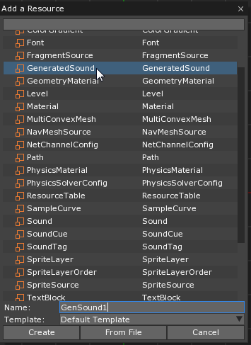
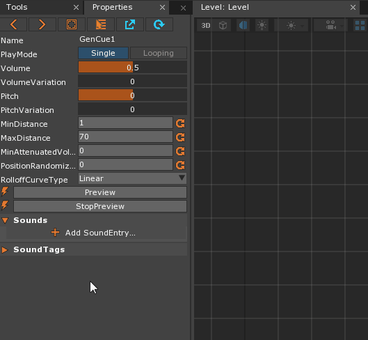
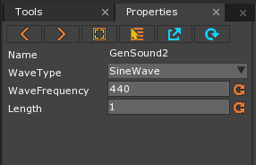
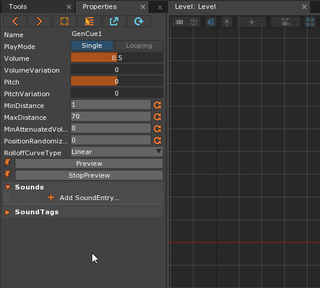

GeneratedSound
GeneratedSound is a resource used to generate user-defined sounds using various types of waveforms.
Common Uses
- In-game sound effects such as weapon noises, muffled and/or alien speech sounds, aural player feedback, etc.
- Sounds for menus and other UI elements
Using GeneratedSound
Creating a GeneratedSound
There are two ways to create a GeneratedSound resource:
- Through the
Add a Resource window:

- Through the SoundCue property grid, when adding a new Sound Entry. Note that to access the “Edit/Add” window inside the SoundEntry, one must right-click on either the arrow next to the
GeneratedSoundinput property or the property field itself:

Using either of these options will bring up the properties for the new GeneratedSound in the Properties window, seen at the end of the animated image above.
The Properties of GeneratedSound
There are three properties available to the user to edit a GeneratedSound: WaveType, WaveFrequency, and Length.

- WaveType
- The waveform used to produce the sound: SineWave, SquareWave, SawWave, TriangleWave, Noise
- WaveFrequency
- A Real used to set the frequency of the wave chosen above
- Length
- A Real used to set how long, in seconds, the sound should play
Experimenting with the properties is certainly a valid way to understand how each WaveType differs and what range of sounds may be produced. There are, however, various online tutorials and primers on waveforms generally as well as the specific types available in Zero. A pdf that covers the basics concerning these topics is provided below:
Playing a GeneratedSound
Just like user-imported Sounds, GeneratedSounds must be placed on a SoundCue resource in order to be played in game. The only difference is that the WhichToUse property on the SoundEntry must be set to Generated instead of the default setting, FromFile:
